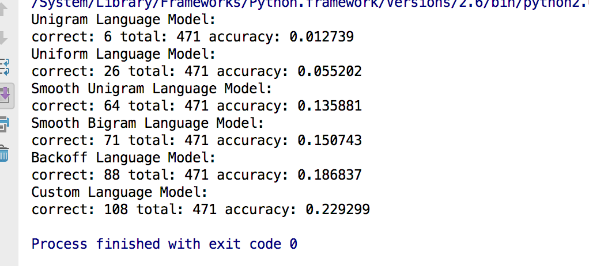

Noisy-Channel Model
Technology: Python, Static
This project will implement a noisy-channel model for spelling correction. This means creating an edit model (likelihood terms) and a language model (distribution in the noise channel model). At test time, a sentence with exactly one error will be passed into the edit model which will perform various edits and select the correction that gives the highest likelihood under the language model. The language model will finally be evaluated for accuracy over valid corrections, divided by the number of sentences tested.
More details about this project
Implement following methods:
Three language models are implemented, insertEdits(all edits formed by inserting a character into the word), transposeEdits(all edits formed by transposing two characters in the word), and replaceEdits(all edits formed by replacing a character with another).
l use various language models to get better results by implement the following language models.
All language models have two functions: train and score.
Evaluating The Language Models
